Nacos 基础知识
服务注册中心本质上是为了解耦服务提供者和服务消费者。对于任何一个微服务，原则上都应存在或者支持多个提供者，这是由微服务的分布式属性决定的。更进一步，为了支持弹性扩缩容特性，一个微服务的提供者的数量和分布往往是动态变化的，也是无法预先确定的。因此，原本在单体应用阶段常用的静态LB机制就不再适用了，需要引入额外的组件来管理微服务提供者的注册与发现，而这个组件就是服务注册中心。
CAP理论
CAP理论是分布式架构中重要理论
一致性(Consistency) (所有节点在同一时间具有相同的数据)
可用性(Availability) (保证每个请求不管成功或者失败都有响应)
分隔容忍(Partition tolerance) (系统中任意信息的丢失或失败不会影响系统的继续运作)
什么是Nacos
Nacos 致力于帮助您发现、配置和管理微服务。Nacos 提供了一组简单易用的特性集，帮助您快速实现动态服务发现、服务配置、服务元数据及流量管理。是Spring Cloud A 中的服务注册发现组件，类似于Consul、Eureka，同时它又提供了分布式配置中心的功能，这点和Consul的config类似，支持热加载。
Nacos 服务注册需要具备的能力：
- 服务提供者把自己的协议地址注册到Nacos server
- 服务消费者需要从Nacos Server上去查询服务提供者的地址（根据服务名称）
- Nacos Server需要感知到服务提供者的上下线的变化
- 服务消费者需要动态感知到Nacos Server端服务地址的变化
作为注册中心所需要的能力大多如此，我们需要做的是理解各种注册中心的独有特性，总结他们的共性。
Nacos的实现原理：
下面我们先来了解一下 Nacos 注册中心的实现原理，通过下面这张图来说明。
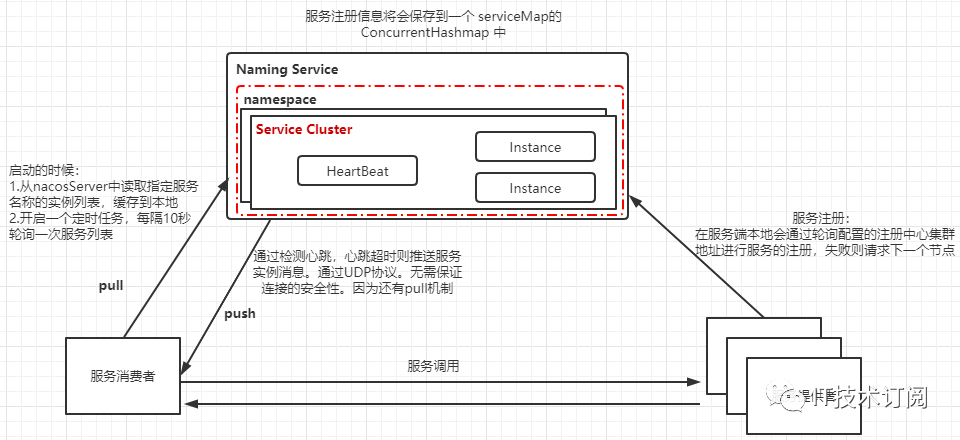
图中的流程是大家所熟悉的，不同的是在Nacos 中，服务注册时在服务端本地会通过轮询注册中心集群节点地址进行服务得注册，在注册中心上，即Nacos Server上采用了Map保存实例信息，当然配置了持久化的服务会被保存到数据库中，在服务的调用方，为了保证本地服务实例列表的动态感知，Nacos与其他注册中心不同的是，采用了 Pull/Push同时运作的方式。
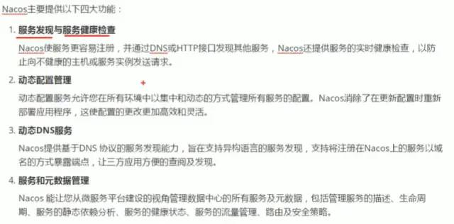
Nacos原理
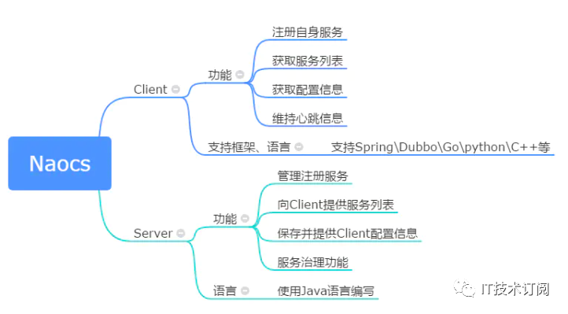
Nacos注册中心分为server与client，server采用Java编写，为client提供注册发现服务与配置服务。而client可以用多语言实现，client与微服务嵌套在一起，nacos提供sdk和openApi，如果没有sdk也可以根据openApi手动写服务注册与发现和配置拉取的逻辑
Nacos注册概括来说有6个步骤：
0、服务容器负责启动，加载，运行服务提供者。
1、服务提供者在启动时，向注册中心注册自己提供的服务。
2、服务消费者在启动时，向注册中心订阅自己所需的服务。
3、注册中心返回服务提供者地址列表给消费者，如果有变更，注册中心将基于长连接推送变更数据给消费者。
4、服务消费者，从提供者地址列表中，基于软负载均衡算法，选一台提供者进行调用，如果调用失败，再选另一台调用。
5、服务消费者和提供者，在内存中累计调用次数和调用时间，定时每分钟发送一次统计数据到监控中心。
Nacos 服务注册与订阅的完整流程
Nacos 客户端进行服务注册有两个部分组成，一个是将服务信息注册到服务端，另一个是像服务端发送心跳包，这两个操作都是通过 NamingProxy 和服务端进行数据交互的。
Nacos 客户端进行服务订阅时也有两部分组成，一个是不断从服务端查询可用服务实例的定时任务，另一个是不断从已变服务队列中取出服务并通知 EventListener 持有者的定时任务。
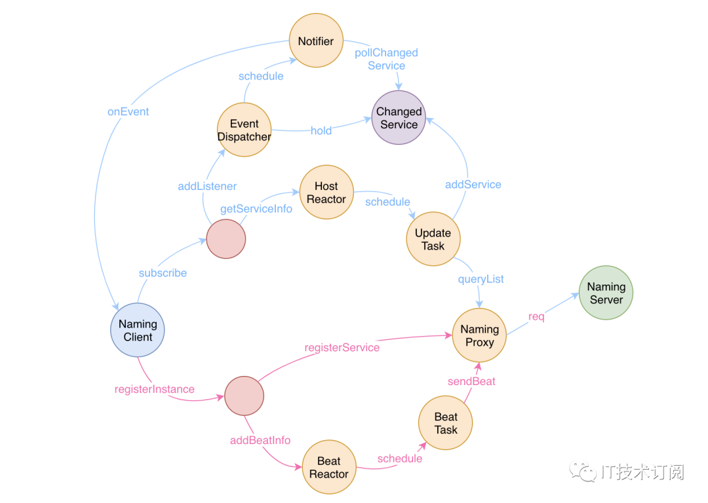
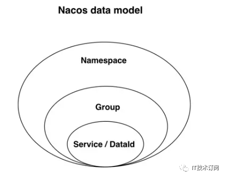
服务领域模型
Nacos的注册发现是一种三层模型: 即 服务–集群–实例
Nacos服务领域模型主要分为命名空间、集群、服务。在下图的分级存储模型可以看到，在服务级别，保存了健康检查开关、元数据、路由机制、保护阈值等设置，而集群保存了健康检查模式、元数据、同步机制等数据，实例保存了该实例的ip、端口、权重、健康检查状态、下线状态、元数据、响应时间。
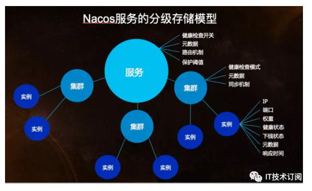
注册中心原理
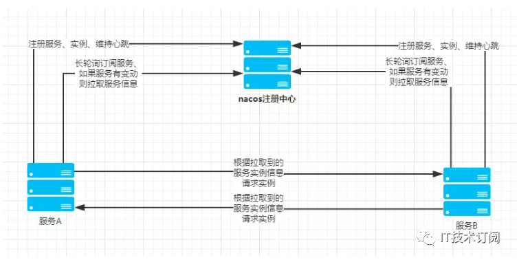
服务注册方法：以Java nacos client v1.0.1 为例子，服务注册的策略的是每5秒向nacos server发送一次心跳，心跳带上了服务名，服务ip，服务端口等信息。同时 nacos server也会向client 主动发起健康检查，支持tcp/http检查。如果15秒内无心跳且健康检查失败则认为实例不健康，如果30秒内健康检查失败则剔除实例。
配置中心原理
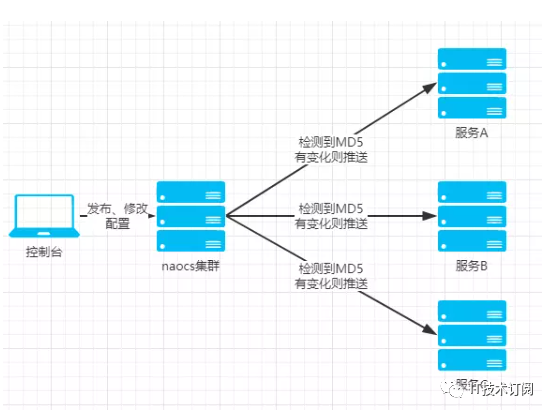
Nacos 的关键特性包括:
服务发现和服务健康监测
Nacos 支持基于 DNS 和基于 RPC 的服务发现。服务提供者使用
原生SDK、OpenAPI、或一个独立的Agent TODO注册 Service 后，服务消费者可以使用DNS TODO
或HTTP&API查找和发现服务。
Nacos 提供对服务的实时的健康检查，阻止向不健康的主机或服务实例发送请求。Nacos 支持传输层 (PING 或 TCP)和应用层
(如 HTTP、MySQL、用户自定义）的健康检查。对于复杂的云环境和网络拓扑环境中（如 VPC、边缘网络等）服务的健康检查，Nacos
提供了 agent 上报模式和服务端主动检测2种健康检查模式。Nacos
还提供了统一的健康检查仪表盘，帮助您根据健康状态管理服务的可用性及流量。
动态配置服务
动态配置服务可以让您以中心化、外部化和动态化的方式管理所有环境的应用配置和服务配置。
动态配置消除了配置变更时重新部署应用和服务的需要，让配置管理变得更加高效和敏捷。
配置中心化管理让实现无状态服务变得更简单，让服务按需弹性扩展变得更容易。
Nacos 提供了一个简洁易用的UI (控制台样例 Demo) 帮助您管理所有的服务和应用的配置。Nacos 还提供包括配置版本跟踪、金丝雀发布、一键回滚配置以及客户端配置更新状态跟踪在内的一系列开箱即用的配置管理特性，帮助您更安全地在生产环境中管理配置变更和降低配置变更带来的风险。
动态 DNS 服务 动态 DNS
服务支持权重路由，让您更容易地实现中间层负载均衡、更灵活的路由策略、流量控制以及数据中心内网的简单DNS解析服务。动态DNS服务还能让您更容易地实现以
DNS 协议为基础的服务发现，以帮助您消除耦合到厂商私有服务发现 API 上的风险。
Nacos 提供了一些简单的 DNS APIs TODO 帮助您管理服务的关联域名和可用的 IP:PORT 列表.
服务及其元数据管理 Nacos
能让您从微服务平台建设的视角管理数据中心的所有服务及元数据，包括管理服务的描述、生命周期、服务的静态依赖分析、服务的健康状态、服务的流量管理、路由及安全策略、服务的
SLA 以及最首要的 metrics 统计数据。
Nacos 服务发现产品对比
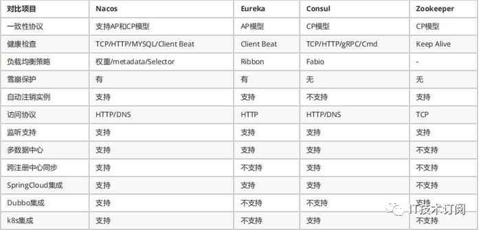
Nacos除了服务的注册发现之外，还支持动态配置服务。动态配置服务可以让您以中心化、外部化和动态化的方式管理所有环境的应用配置和服务配置。动态配置消除了配置变更时重新部署应用和服务的需要，让配置管理变得更加高效和敏捷。配置中心化管理让实现无状态服务变得更简单，让服务按需弹性扩展变得更容易。
一句话概括就是Nacos = Spring Cloud注册中心 + Spring Cloud配置中心。
面试分析
为什么要将服务注册到nacos?(为了更好的查找这些服务)
在Nacos中服务提供者是如何向Nacos注册中心(Registry)续约的？(5秒心跳)
对于Nacos服务来讲它是如何判定服务实例的状态？(检测心跳包，15,30)
服务启动时如何找到服务启动注册配置类?(NacosNamingService)
服务消费方是如何调用服务提供方的服务的？(RestTemplate)
@Bean注解的作用?(一般用于配置类内部,描述相关方法,用于告诉spring此方法的返回值要交给spring管理,bean的名字默认为方法名,假如需要指定名字可以@Bean(“bean的名字”),最多的应用场景是整合第三方的资源-对象)
@Autowired注解的作用?(此注解用于描述属性,构造方法,set方法等,用于告诉spring框架,按找一定的规则为属性进行DI操作,默认按属性,方法参数类型查找对应的对象,假如只找到一个,则直接注入,类型多个时还会按照属性名或方法参数名进行值的注入,假如名字也不同,就出报错.)
Nacos中的负责均衡底层是如何实现的?(通过Ribbon实现,Ribbon中定义了一些负载均衡算法,然后基于这些算法从服务实例中获取一个实例为消费方法提供服务)
Ribbon 是什么？(Netflix公司提供的负载均衡客户端,一般应用于服务的消费方法)
Ribbon 可以解决什么问题? (基于负载均衡策略进行服务调用, 所有策略都会实现IRule接口)
Ribbon 内置的负载策略都有哪些?(8种,可以通过查看IRule接口的实现类进行分析)
@LoadBalanced的作用是什么？(描述RestTemplate对象,用于告诉Spring框架，在使用RestTempalte进行服务调用时，这个调用过程会被一个拦截器进行拦截,然后在拦截器内部,启动负载均衡策略。)
我们可以自己定义负载均衡策略吗？(可以，基于IRule接口进行策略定义,也可以参考NacosRule进行实现)
一、Nacos的整体架构
Nacos的整体架构还是比较清晰的，我们可以从下面这个官方提供的架构图进行简单分析。
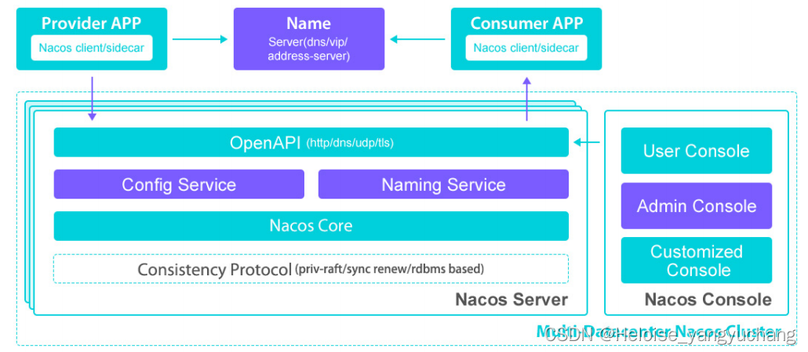
二、Nacos 原理
之前讲过注册中和配置中心的核心原理，信息的同步主要的几种方式：
push （服务端主动push）
pull （客户端的轮询）， 超时时间比较短
long pull （超时时间比较长）
2.1、配置中心原理
nacos 配置中心就是采用：客户端 long pull 的方式
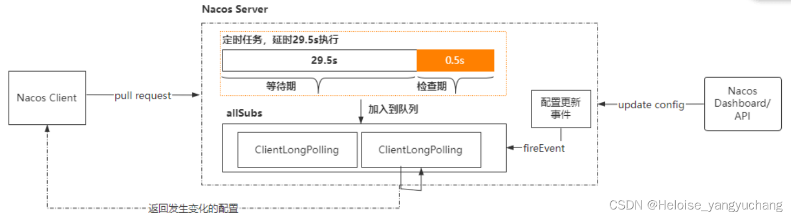
Nacos 客户端会循环请求服务端变更的数据，并且超时时间设置为30s，当配置发生变化时，请求的响应会立即返回，否则会一直等到 29.5s+ 之后再返回响应
客户端的请求到达服务端后，服务端将该请求加入到一个叫 allSubs 的队列中，等待配置发生变更时 DataChangeTask主动去触发，并将变更后的数据写入响应对象。
与此同时服务端也将该请求封装成一个调度任务去执行，等待调度的期间就是等DataChangeTask 主动触发的，如果延迟时间到了 DataChangeTask 还未触发的话，则调度任务开始执行数据变更的检查，然后将检查的结果写入响应对象（基于文件的MD5）
2.2、注册中心原理
nacos注册中心采用了 ：pull （客户端的轮询）和push （服务端主动push）
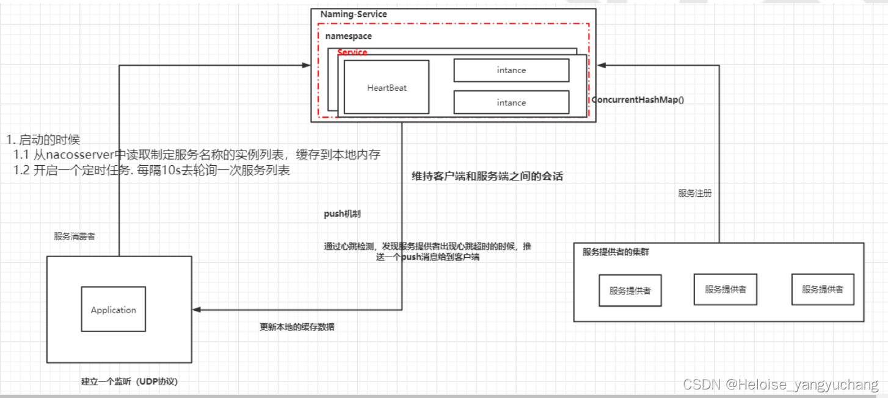
客户端启动时会将当前服务的信息包含ip、端口号、服务名、集群名等信息封装为一个Instance对象，然后创建一个定时任务，每隔一段时间向Nacos服务器发送PUT请求并携带相关信息。
nacos服务器端在接收到心跳请求后，会去检查当前服务列表中有没有该实例，如果没有的话将当前服务实例重新注册，注册完成后立即开启一个异步任务，更新客户端实例的最后心跳时间，如果当前实例是非健康状态则将其改为健康状态。
心跳定时任务创建完成后，通过POST请求将当前服务实例信息注册进nacos服务器。
nacos服务器端在接收到注册实例请求后，会将请求携带的数据封装为一个Instance对象，然后为这个服务实例创建一个服务Service，一个Service下可能有多个服务实例，服务在Nacos保存到一个ConcurrentHashMap中Map(namespace,Map(group::serviceName, Service))； 。
nacos将实例添加到对应服务列表中会根据AP和CP不同的模式，采用不同协议。
CP模式就是基于Raft协议（通过leader节点将实例数据更新到内存和磁盘文件中，并且通过CountDownLatch实现了一个简单的raft写入数据的逻辑，必须集群半数以上节点写入成功才会给客户端返回成功）
AP模式基于Distro协议（向任务阻塞队列添加一个本地服务实例改变任务，去更新本地服务列表，然后在遍历集群中所有节点，分别创建数据同步任务放进阻塞队列异步进行集群数据同步，不保证集群节点数据同步完成即可返回）
nacos在将服务实例更新到服务注册表中时，为了防止并发读写冲突，采用的是写时复制的思想，将原注册表数据拷贝一份，添加完成之后再替换回真正的注册表。
nacos在更新完成之后，通过发布服务变化事件，将服务变动通知给客户端，采用的是UDP通信，客户端接收到UDP消息后会返回一个ACK信号，如果一定时间内服务端没有收到ACK信号，还会尝试重发，当超出重发时间后就不在重发。
客户端通过定时任务定时从服务端拉取服务数据保存在本地缓存。
服务端在发生心跳检测、服务列表变更或者健康状态改变时会触发推送事件，在推送事件中会基于UDP通信将服务列表推送到客户端，虽然通过UDP通信不能保证消息的可靠抵达，但是由于Nacos客户端会开启定时任务，每隔一段时间更新客户端缓存的服务列表，通过定时轮询更新服务列表做兜底，所以不用担心数据不会更新的情况，这样既保证了实时性，又保证了数据更新的可靠性。
2.3、心跳机制
服务的健康检查分为两种模式：
客户端上报模式：客户端通过心跳上报的方式告知nacos 注册中心健康状态（默认心跳间隔5s，nacos将超过超过15s未收到心跳的实例设置为不健康，超过30s将实例删除）
服务端主动检测：nacos主动检查客户端的健康状态（默认时间间隔20s，健康检查失败后会设置为不健康，不会立即删除）
nacos 目前的instance有一个ephemeral字段属性，该字段表示实例是否是临时实例还是持久化实例。如果是临时实例则不会在nacos中持久化，需要通过心跳上报，如果一段时间没有上报心跳，则会被nacos服务端删除。删除后如果又重新开始上报，则会重新实例注册。而持久化实例会被nacos服务端持久化，此时即使注册实例的进程不存在，这个实例也不会删除，只会将健康状态设置成不健康。
这里就涉及到了nacos的AP和CP模式 ，默认是AP，即nacos的client的节点注册时ephemeral=true，那么nacos集群中这个client节点就是AP，采用的是distro 协议，而ephemeral=false时就是CP采用的是raft协议实现。所以nacos可以很好的解决了业务常见的不同需求。
#false为永久实例，true表⽰临时实例开启，注册为临时实例，默认是true
spring.cloud.nacos.discovery.ephemeral=true
为什么nacos有两种心跳机制？
对于临时实例，健康检查失败，则直接删除。这种特性适合于需要应对流量突增的场景，服务可以弹性扩容，当流量过去后，服务停掉即可自动注销。
对于持久化实例，健康检查失败，会设置为不健康状态。它的优点就是可以实时的监控到实例的健康状态，便于后续的告警和扩容等一系列处理。
2.4、自我保护
nacos也有自我保护机制（当前健康实例数/当前服务总实例数），值为0-1之间的浮点类型。正常情况下nacos 只会健康的实例。单在高并发场景，如果只返回健康实例的话，流量洪峰到来可能直接打垮剩下的健康实例，产生雪崩效应。
保护阈值存在的意义在于当服务A健康实例数/总实例数 < 保护阈值时，Nacos会把该服务所有的实例信息（健康的+不健康的）全部提供给消费者，消费者可能访问到不健康的实例，请求失败，但这样远比造成雪崩要好。牺牲了请求，保证了整个系统的可用。
简单来说不健康实例的另外一个作用：防止雪崩
如果所有的实例都是临时实例，当雪崩出现时，Nacos的阈值保护机制是不是就没有足够的（包含不健康实例）实例返回了，其实如果有部分实例是持久化实例，即便它们已经挂掉，状态为不健康，但当触发自我保护时，还是可以起到分流的作用。